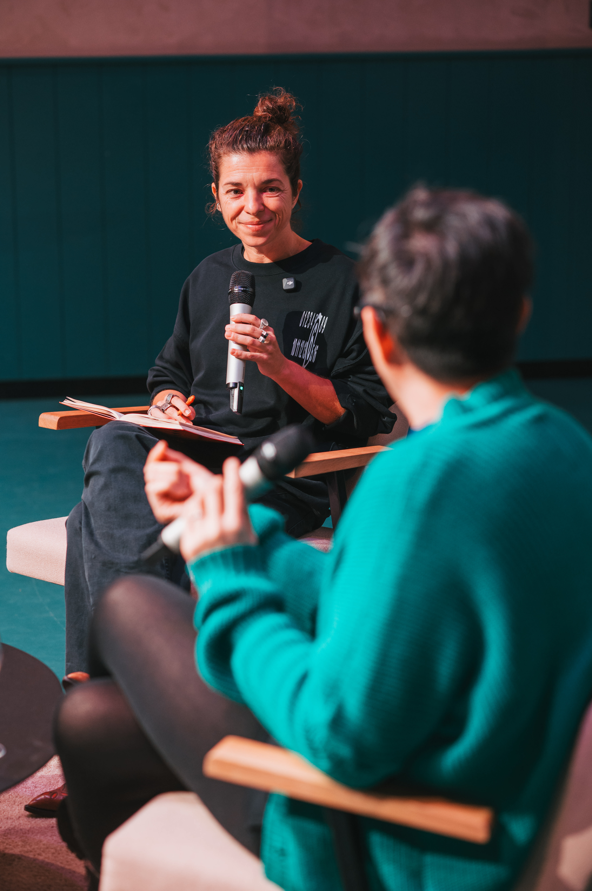
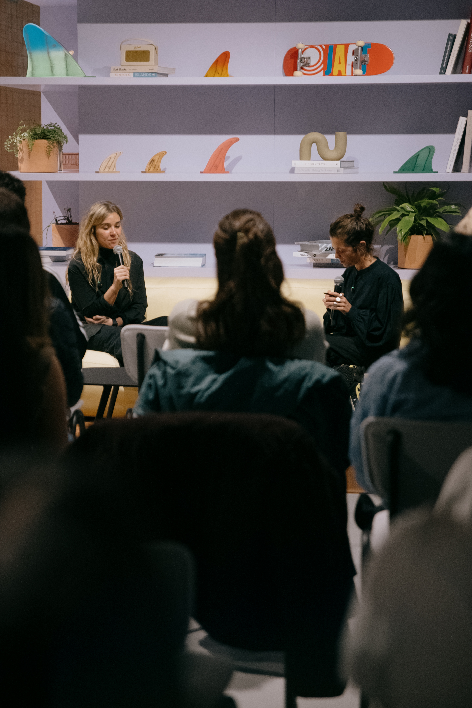
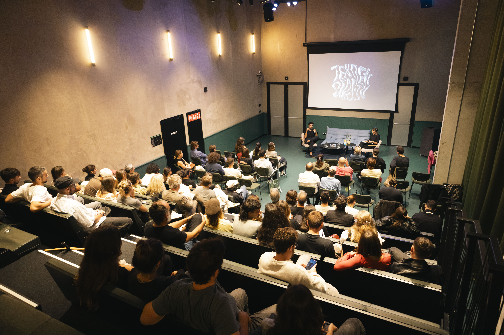
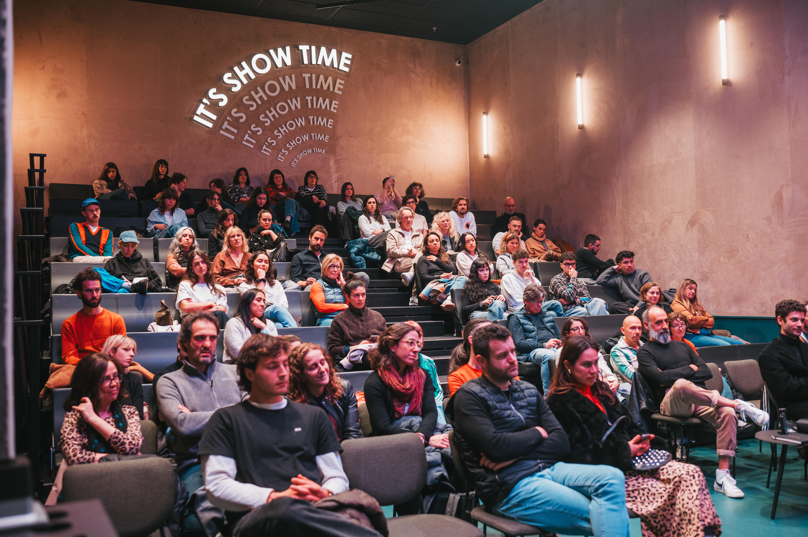
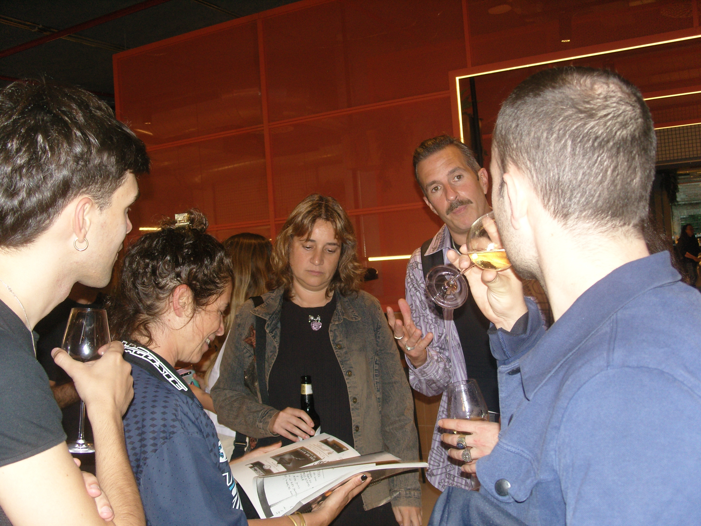
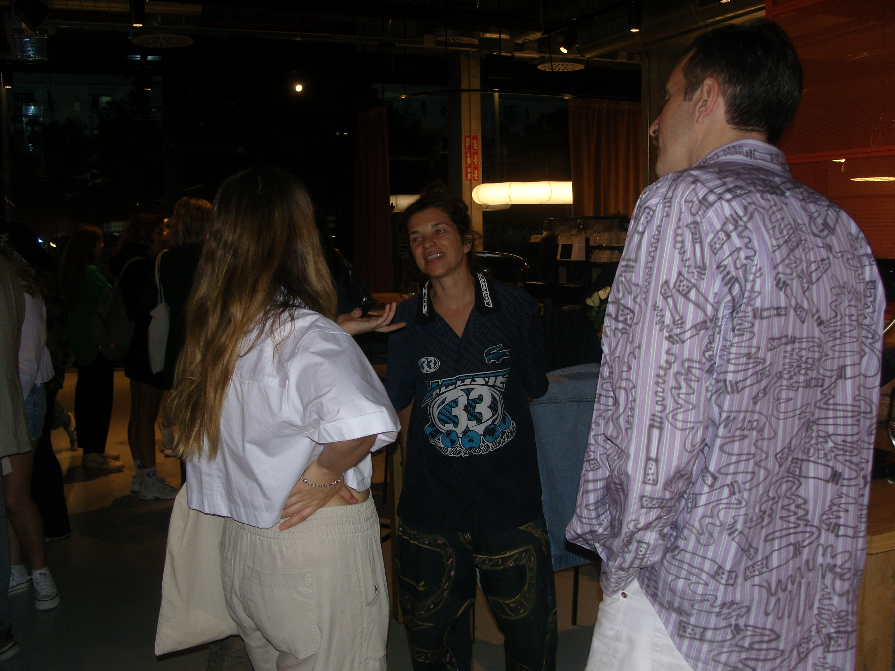

Skyperoom
Skyperoom es un podcast en vivo que encapsula más de 150 episodios dentro de TendenciasTV. Empezamos en 2022 y desde ese momento se ha convertido en una sección clave para el magazine. Dentro de estos podcast se han compartido momentos increíbles con figuras clave del entorno creativo hispanohablante de tantas maneras como se puede hacer arte.






